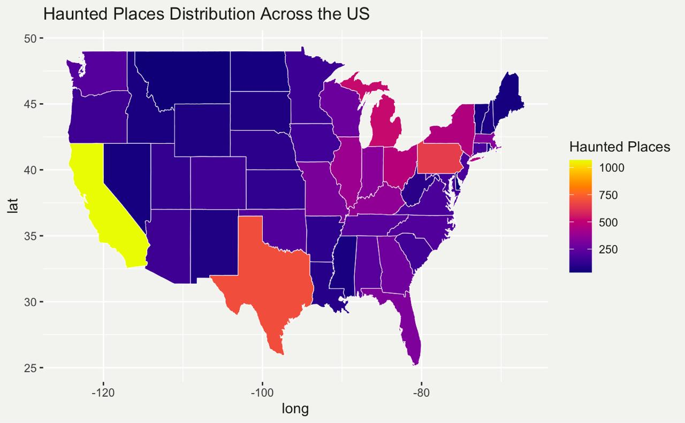
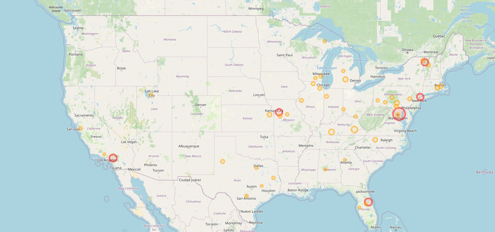
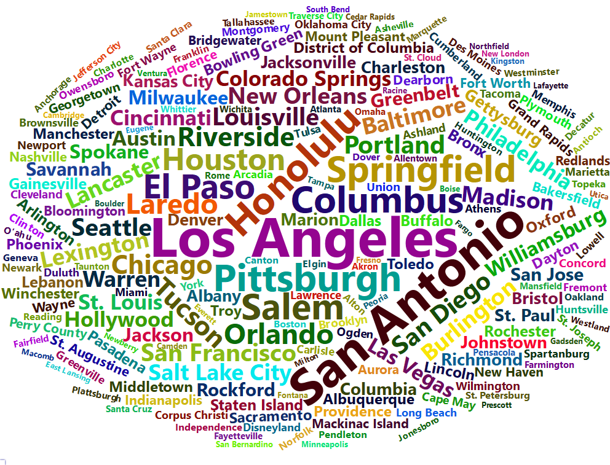
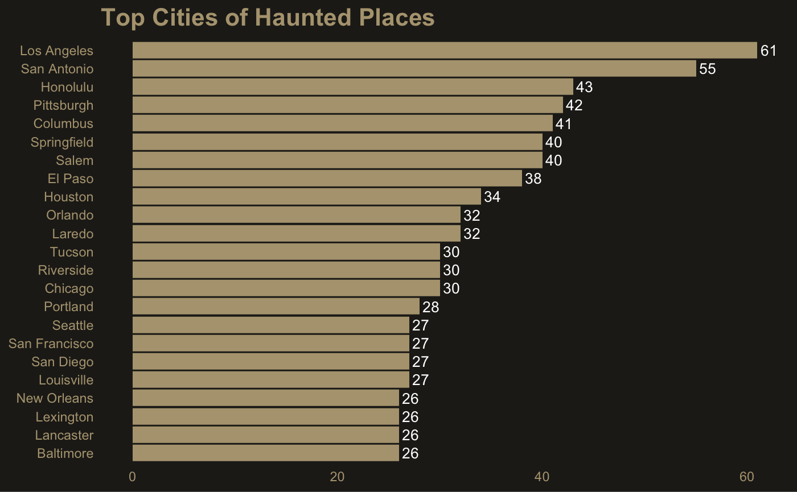

---- Compiling #TidyTuesday Information for 2023-10-10 ----
--- There is 1 file available ---
── Downloading files ───────────────────────────────────────────────────────────
1 of 1: "haunted_places.csv"
Wow there are 9904 unique locations in 4386 unique cities across usa. This is interesting. Hmm things going weired because there are only 50 states in the US but we have 51 unique values in the state column. Let’s dig deeper into this.
# A tibble: 1 × 8
city description location state latitude longitude city_latitude
<int> <int> <int> <int> <int> <int> <int>
1 3 0 3 0 1261 1261 29
# ℹ 1 more variable: city_longitude <int>
printing the rows with missing values in city_latitude and city_longitude columns.
creating a frequency table for the city ,location and state columns
A table of City Frequency and Proportion
City
Counts
Proportions
Los Angeles
61
0.0139844
San Antonio
55
0.0126089
Honolulu
43
0.0098579
Pittsburgh
42
0.0096286
Columbus
41
0.0093994
A table of State Frequency and Proportion
State
Counts
Proportions
California
1067
20.921569
Texas
696
13.647059
Pennsylvania
648
12.705882
Michigan
526
10.313726
Ohio
475
9.313726
Create a proportion table for it.
Ok now we can see that some of the location names have some additional data and typos and with different cases. Let’s clean this. we have total of 638 rows of the cities with more that one common lat and long.
Super. it worked😍. Now we can see that the location names are cleaned.
Now we can apply the same method for entire dataframe.
Yeah it worked. Now we can see that the location names are cleaned.
A table of Location with multiple citing
Location
Counts
Prince Georges county
20
Cry Baby Bridge
14
Cemetery
13
Mission Inn
12
Oviedo
12
this is the true location frequency.
these are the locations with multiple ghost citings. lets plot it on the map.
get top 25 places with multiple haunted citing.
Modelling
We can analyze if there’s a relationship between distance from city center and the concentration of haunted places. we can create a multilinear regression model to predict the number of haunted places in a city based on the distance from the city center.
State Distribution

Choropleth Map of states
Bubble map of top 50 haunted places

Bubble Map
Word Cloud of the cities

Word Cloud of Cities
Bar plot of Top 20 hauntred siting in cities

Bar plot of Top 20 hauntred siting in cities
Null Hypothesis \(H_0\) : proportion of simulation rejections found using the CLT based approach was equal to 10%. \[H_0 : p= \text{Time in Bed (TIB)}\]
Alternative Hypotheses \(H_A\) : proportion of simulation rejections found using the CLT based approach was different from 10%. \[H_1 : p\neq\text{Time in Bed (TIB)}\]
\newpage
library(tidyverse)library(leaflet)library(wordcloud2)library(webshot)library("htmlwidgets")library(knitr)webshot::install_phantomjs()# Importing the datasettuesdata <- tidytuesdayR::tt_load('2023-10-10')haunted_places <- tuesdata$haunted_places# Glimpse of the datasethaunted_places %>%glimpse()# Counting unique values in each columncolumn_summary <- haunted_places %>%summarise(across(everything(), ~n_distinct(.)))column_summary# Get unique values in the state column in alphabetical order.unique_states <- haunted_places %>%distinct(state) %>%arrange(state)unique_states# Gottcha there is a value 'Washington D.C.' which is not a state# but a federal district. Let's correct this.# we can dig deeper into the dataset to find out the # haunted places in Washington D.C.# Haunted places in Washington D.C.haunted_places_dc <- haunted_places %>%filter(state =="Washington DC")haunted_places_dc# OK Ok. I think there is lot going on in the Us.# "After some web search I found that the Wasington DC is a separate entity # from the US but overseen by US"# Ohh, That's there political concern. Iam going to keep it as it is.# Cleaning the dataset# Removing redundant columns (Country, state_abbrev)haunted_places <- haunted_places %>%select(city, description, location, state, latitude, longitude, city_latitude, city_longitude)# Function for checking missing valuesmissing_values <-function(df){ df %>%summarise(across(everything(), ~sum(is.na(.))))}missing_values(haunted_places)# Print rows with missing values in city_latitude and city_longitude columnsmissing_coordinates <- haunted_places %>%filter(is.na(city_latitude) |is.na(city_longitude))missing_coordinatesfor (city in missing_coordinates$city) {print(haunted_places[haunted_places$city == city, ])}# by doing the city search we can see that we can find the city latitude and # longitude of these cities.# Cockeysville, Faribault, Streamwood, Cynthiana# Lets fix these city coordinates. (may be later)# Dig deeper into the missing values# removing the rows with missing values in city, location, city_latitude, city_longitude columnshaunted_places <- haunted_places %>%filter(!is.na(city) &!is.na(location) &!is.na(city_latitude) &!is.na(city_longitude))# Checking for missing valuesmissing_values(haunted_places)# Before removing the duplicatesnrow(haunted_places)# Find exact duplicatesduplicate_rows <- haunted_places %>%group_by(across(everything())) %>%filter(n() >1) %>%ungroup()# Display the duplicate rowsprint(duplicate_rows)# Remove the Exact duplicate rowshaunted_places <- haunted_places %>%distinct()# find the total number of rows in the dataset after removing the duplicatesnrow(haunted_places)# Frequency table for city columncity_freq <- haunted_places %>%count(city, sort =TRUE)# Create a proportion table for the location columncity_prop <- city_freq %>%mutate(proportion = n /4362)kable(city_prop[1:5,], caption ="Frequency and Proportional Table of City", col.names =c("City", "Counts", "Proportions"))# Frequency table for state columnstate_freq <- haunted_places %>%count(state, sort =TRUE)# Create a proportion table for the location columncity_prop <- state_freq %>%mutate(proportion = n /51)kable(city_prop[1:5,], caption ="Freq and Prop Table of City", col.names =c("State", "Counts", "Proportions"))# wordcloud for city columncity_cloud <-wordcloud2(city_freq, size =0.5)city_cloud# wordcloud for location columnlocation_cloud <-wordcloud2(location_freq, size =0.5)location_cloud# wordcloud for state columnstate_cloud <-wordcloud2(state_freq, size =0.8)state_cloud# Converting the the wordcloud into image# save it in htmlsaveWidget(city_cloud,"tmp_city.html",selfcontained = F)saveWidget(state_cloud,"tmp_state.html",selfcontained = F)saveWidget(location_cloud,"tmp_location.html",selfcontained = F)# and in png or pdfwebshot("tmp_city.html","city_cloud.png", delay =5)webshot("tmp_state.html","state_cloud.png", delay =5)webshot("tmp_location.html","location_cloud.png", delay =5)# Filter rows where 'location' contains "Cemetery"cemetery_coordinates <- haunted_places %>%filter(grepl("cemetery", location, ignore.case =TRUE)) %>%select(location, latitude, longitude) %>%arrange(location)school_coordinates <- haunted_places %>%filter(grepl("school", location, ignore.case =TRUE)) %>%select(location, latitude, longitude) %>%arrange(location)university_coordinates <- haunted_places %>%filter(grepl("university", location, ignore.case =TRUE)) %>%select(location, latitude, longitude) %>%arrange(location)# Print the resultcemetery_coordinatesschool_coordinatesuniversity_coordinates# We find some intersting finding in the dataset# That is there are 748 Cementry citing but there are 1210 Haunted citing in School.# Creepy# Finding the location which have same latitude and longitude (without considering the NA values)same_coordinates <- haunted_places %>%group_by(latitude, longitude) %>%filter(n() >1) %>%ungroup()# Remove NA valuessame_coordinates <- same_coordinates %>%filter(!is.na(latitude) &!is.na(longitude))same_coordinates# Create a frequency table for the location columnsame_coordinates_freq <- same_coordinates %>%count(location, sort =TRUE)same_coordinates_freq# Create a proportion table for the location columnsame_coordinates_prop <- same_coordinates_freq %>%mutate(proportion = n /870)same_coordinates_prop# We can see that some of the latitudes and longitudes are same for different # location (but they are not, it is just the typo.)# function to filter the duplicate datafilter_duplicate_locations <-function(df) { df %>%group_by(latitude, longitude) %>%filter(n_distinct(location) >1) %>%arrange(latitude, longitude) # Arrange by latitude and longitude}# Identify locations with the same latitude and longitude but different namesresult <-filter_duplicate_locations(haunted_places)# Remove NA valuesresult <- result %>%filter(!is.na(latitude) &!is.na(longitude))# Print the resultresult# Clean the location column# Replace locations with the shortest name; if equal, use the first nameupdated_location_names <- result %>%group_by(latitude, longitude) %>%mutate(location = location[which.min(nchar(location))]) %>%# Shortest name or first in tieungroup()# Print the updated data frameupdated_location_names# Conforming it is working or notupdated_location_names <-filter_duplicate_locations(updated_location_names)updated_location_namesnrow(haunted_places)# Standardize location names only for non-NA coordinateshaunted_places <- haunted_places %>%group_by(latitude, longitude) %>%mutate(# Only standardize when coordinates are not NAstandardized_location =if(!any(is.na(latitude)) &&!any(is.na(longitude))) {names(which.max(table(location))) } else { location } ) %>%ungroup() %>%mutate(location = standardized_location) %>%select(-standardized_location)# Verify the resultshaunted_places %>%group_by(latitude, longitude) %>%filter(n_distinct(location) >1, !is.na(latitude), !is.na(longitude))# Frequency table for location column without NA valueslocation_freq <- haunted_places %>%filter(!is.na(location)) %>%count(location, sort =TRUE)kable(location_freq[1:5,], caption ="Frequency and Proportional Table", col.names =c("Location", "Counts"))# Group by latitude, longitude, and location, then count occurrencessame_coordinates_freq <- haunted_places %>%group_by(latitude, longitude, location) %>%summarise(count =n(), .groups ="drop") %>%# Count occurrences and drop groupingarrange(desc(count)) %>%# Sort by count in descending orderfilter(!is.na(latitude) &!is.na(longitude)) # Remove NA values# View the updated frequency tablesame_coordinates_freqtop_50_places <- same_coordinates_freq[1:50,]# Create the leaflet map of top 50 places with multiple haunted sightings# Show a CUSTOM circle at each position. Size defined in Pixel. Size does not change when you zoomm=leaflet(data = top_50_places) %>%addTiles() %>%addCircleMarkers(~longitude, ~latitude, radius=~count*1 , color=~ifelse(top_50_places$count>10 , "red", "orange"),stroke =TRUE, fillOpacity =0.1,popup =~as.character(location) ) m# Converting the the leaflet map into image# save it in htmlsaveWidget(m,"tmp_top_50.html",selfcontained = F)# and in png or pdfwebshot("tmp_top_50.html","top_50_map.png", delay =5, vwidth =3840,vheight =2160)# save the haunted places data as a csv filewrite_csv(haunted_places, "haunted_places.csv")